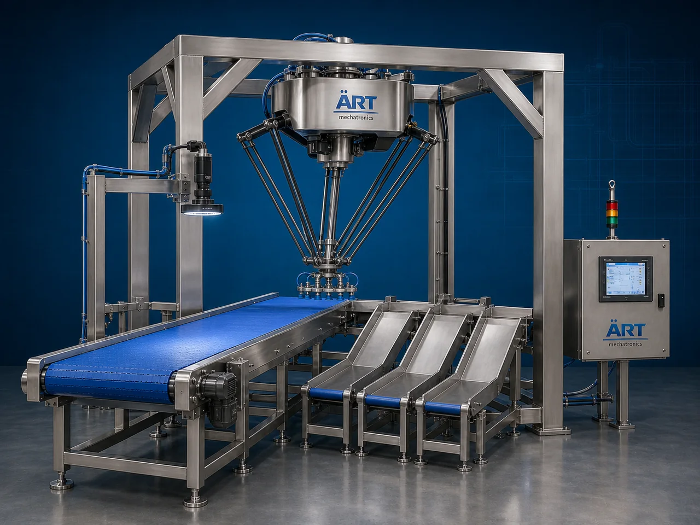

Sorting Robot Machine (Industrial Robotic Product Sorting & Automation System)
A Sorting Robot Machine, also known as a Robotic Sorting System or Industrial Sorting Automation Machine, is an advanced automation solution designed for automatic product sorting, classification, inspection, segregation, picking, routing, and intelligent material handling using robotic arms, AI…

About the Sorting Robot
Sorting robot systems are widely used for: ✔ Automated product sorting ✔ Parcel and package classification ✔ Defect detection and rejection ✔ Intelligent warehouse automation ✔ Conveyor line sorting systems ✔ Smart factory automation
The machine improves: ✔ Sorting speed and accuracy ✔ Production efficiency ✔ Labor reduction ✔ Product handling consistency ✔ Operational safety ✔ Industrial automation capability
The robotic sorting system combines: ✔ Robotic arms or delta robots ✔ Conveyor systems ✔ AI vision technology ✔ Barcode and sensor systems ✔ PLC and HMI automation
to perform intelligent high-speed sorting operations automatically.
Sorting robot machines are widely used in industries such as:
E-commerce fulfillment centers
Packaging industries
Food processing industries
Pharmaceutical industries
Warehousing & logistics
Manufacturing industries
Courier and parcel industries
Electronics industries
where high-speed automated product sorting and smart logistics systems are essential.
The machine is highly suitable for: ✔ Parcel sorting ✔ Product classification ✔ Defect rejection systems ✔ Conveyor sorting automation ✔ Smart warehouse operations ✔ Automated dispatch systems
ART Mechatronics offers high-performance sorting robot machines, engineered for Industry 4.0 automation, intelligent product handling, high-speed sorting accuracy, and reliable long-term industrial performance.
Working Principle of Sorting Robot Machine
Products move continuously on conveyor system for sorting operation
AI vision systems, sensors, or barcode scanners identify: ✔ Product type ✔ Shape ✔ Size ✔ Color ✔ Barcode ✔ Quality defects ✔ Destination category
Robotic arm or sorting mechanism picks and places products into designated sections
Machine automatically separates products according to programmed sorting logic.
PLC automation synchronizes: Conveyor speed Robot movement Product tracking Sorting accuracy
Machine sorts: ✔ Parcels ✔ Cartons ✔ Bottles ✔ Food products ✔ Pharmaceutical products ✔ Industrial components with high precision and speed.
Sorted products transferred automatically to: Packaging lines Dispatch zones Storage systems Rejection bins Warehouse sections
Types of Sorting Robot Machines
- 1. Conveyor Sorting Robot
Designed for: ✔ High-speed conveyor line sorting operations
- 2. AI Vision Sorting Robot
Suitable for: ✔ Intelligent camera-based product classification systems
- 3. Parcel Sorting Robot
Used for: ✔ Logistics and courier automation systems
- 4. Food Sorting Robot
Designed for: ✔ Food product sorting and quality inspection applications
- 5. Delta Sorting Robot
Suitable for: ✔ High-speed lightweight product sorting operations
- 6. Smart Warehouse Sorting Robot
Designed for: ✔ Automated warehouse and distribution center operations
Industries Using Sorting Robot Machines
🛒 E-Commerce Industry Parcel sorting and fulfillment center automation systems 📦 Packaging Industry Product classification and packaging automation systems 🍃 Food Processing Industry Food sorting and inspection automation systems 💊 Pharmaceutical Industry Medicine sorting and packaging systems 🚚 Warehousing & Logistics Smart warehouse automation systems 🚛 Courier & Parcel Industry High-speed parcel sorting systems 💻 Electronics Industry Component sorting and quality inspection systems 🏭 Manufacturing Industry Automated product classification systems
Features & Advantages
✔ High-speed automated product sorting ✔ AI vision and intelligent classification capability ✔ Reduces labor and manual sorting errors ✔ Improves operational efficiency and productivity ✔ Continuous industrial operation ✔ Smart conveyor and robotic synchronization ✔ Flexible sorting logic and programming options ✔ Accurate defect detection and rejection systems ✔ Energy-efficient industrial automation solution
Technical Highlights
Robot Type: Delta robot Multi-axis robotic arm Conveyor sorting robot Detection Technology: AI vision systems Barcode scanners Proximity sensors Camera inspection systems Control System: PLC automation Servo synchronization systems HMI touchscreen controls Conveyor Integration: Belt conveyors Roller conveyors Smart conveyor systems Automation: Fully automatic robotic operation
Turnkey Sorting Automation Solutions
ART Mechatronics offers: Complete robotic sorting systems Smart warehouse automation solutions Conveyor and robotic integration systems AI vision inspection and sorting systems Installation & commissioning After-sales service & AMC
Why Choose Art Mechatronics
Expertise in industrial robotics and intelligent automation systems Customized sorting robot solutions for multiple industries High-performance AI-based sorting systems Advanced PLC, vision, and robotic integration capability Proven Industry 4.0 automation performance across sectors
Applications
E-Commerce Fulfillment Centers Packaging Facilities Food Processing Plants Pharmaceutical Manufacturing Units Warehousing & Logistics Centers Smart Factory Facilities
Related Automation & Robotics machines
Get pricing & specs for the Sorting Robot
Share the product, target capacity, current process and plant location. These details help our engineers discuss the right machine or line configuration.
One partner, from design to start-up
ART Mechatronics designs, manufactures, installs and commissions your Sorting Robot solution with regional presence in India, UAE and Thailand.